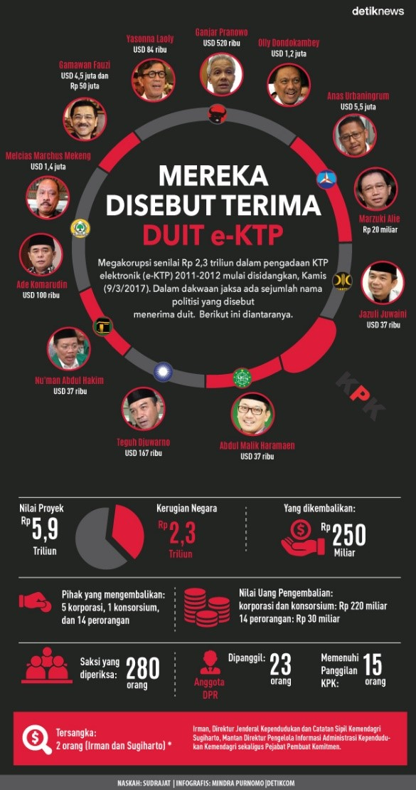

DAFTAR PANJANG PENERIMA KASUS KORUPSI E-KTP OLEH PETINGGI NEGARA INDONESIA
Oleh: Sherly Arista Pratiwi / 10613028
Berita yang masih hangat hingga kini adalah kasus korupsi E-KTP yang melibatkan berbagai pihak dan merugikan negara dengan nominal yang tidak sedikit. Proyek ini telah disosialisasikan sejak tahun 2003 kemudian di tahun 2011 proses pengadaan barang dan pembuatan e-KTP dilakukan. Mega proyek ini menghabiskan anggaran sistem multiyears sekitar Rp. 6 Trilliun menggunakan Pagu Anggaran 2011-2012. Anggaran ini cukup besar sehingga muncul kecurigaan. Namun, Menteri Dalam Negeri saat itu Gamawan Fauzi menyatakan yakin proyek tersebut tidak tersentuh tangan-tangan koruptor. “Kalau ada pelanggaran, ungkap saja. Saya malah dari awal minta tolong KPK 2 kali presentasi ke mereka. ICW saya Surati saya juga minta ke BPKP. Kalau ada pelanggaran buka semua.” Kata Gamawan di kantor Presiden, Jalan Medan Merdeka Utara, Jakarta Pusat, Rabu, 22 Juni 2011. Pemenang tender dimenangkan oleh konsorsium Percetakan Negara Republik Indonesia (PNRI) yang terdiri dari Perum PNRI PT. Sucofindo, PT. LEN Industri, PT. Sandipala Arthaput, dan PT. Quadra Solution dengan harga Rp. 5,9 Trilliun. Mereka menang setelah mengalahkan PT. Astra Graphia yang menawarkan harga Rp. 6 Trilliun. Tapi banyak pihak yang merasa janggal dari muncul pemenan ini. Enam bulan kemudian, Komisi Pengawas Persaingan Usaha (KPPU) menyatakan ada persekongkolan dalam tender penerapan KTP Berbasis NIK Nasional (E-KTP) Tahun 2011-2012. Pelakunya menurut KPPU adalah Panitia Tender, PNRI, dan PT. Astra Graphia Tbk. KPK mulai menelusuri dugaan korupsi pada tanggal 22 April 2014. Komisi menetapkan Mantan Direktur Pengelola Informasi Administrasi Kependudukan Ditjen Dukcapil Kemendagri sebagai tersangka. Berikut merupakan pihak yang disebut jaksa KPK sebagai penerima aliran dana Proyek E-KTP:
- Gamawan Fauzi USD 4,5 juta dan Rp 50 juta
- Diah Anggraini USD 2,7 juta dan Rp 22,5 juta
- Drajat Wisnu Setyaan USD 615 ribu dan Rp 25 juta
- 6 orang anggota panitia lelang masing-masing USD 50 ribu
- Husni Fahmi USD 150 ribu dan Rp 30 juta
- Anas Urbaningrum USD 5,5 juta
- Melcias Marchus Mekeng USD 1,4 juta
- Olly Dondokambey USD 1,2 juta
- Tamsil Lindrung USD 700 ribu
- Mirwan Amir USD 1,2 juta
- Arief Wibowo USD 108 ribu
- Chaeruman Harahap USD 584 ribu dan Rp 26 miliar
- Ganjar Pranowo USD 520 ribu
- Agun Gunandjar Sudarsa selaku anggota Komisi II dan Banggar DPR USD 1,047 juta
- Mustoko Weni USD 408 ribu
- Ignatius Mulyono USD 258 ribu
- Taufik Effendi USD 103 ribu
- Teguh Djuwarno USD 167 ribu
- Miryam S Haryani USD 23 ribu
- Rindoko, Nu’man Abdul Hakim, Abdul Malik Haramaen, Jamal Aziz, dan Jazuli Juwaini selaku Kapoksi pada Komisi II DPR masing-masing USD 37 ribu
- Markus Nari Rp 4 miliar dan USD 13 ribu
- Yasonna Laoly USD 84 ribu
- Khatibul Umam Wiranu USD 400 ribu
- M Jafar Hapsah USD 100 ribu
- Ade Komarudin USD 100 ribu
- Abraham Mose, Agus Iswanto, Andra Agusalam, dan Darma Mapangara selaku direksi PT LEN Industri masing-masing Rp 1 miliar
- Wahyudin Bagenda selaku Direktur Utama PT LEN Industri Rp 2 miliar
- Marzuki Ali Rp 20 miliar
- Johanes Marliem USD 14,880 juta dan Rp 25.242.546.892
- 37 anggota Komisi II lain seluruhnya berjumlah USD 556 ribu, masing-masing mendapatkan uang USD 13-18 ribu
- Beberapa anggota tim Fatmawati yaitu Jimmy Iskandar Tedjasusila alias Bobby, Eko Purwoko, Andi Noor, Wahyu Setyo, Benny Akhir, Dudi, dan Kurniawan masing-masing Rp 60 juta
- Manajemen bersama konsorsium PNRI Rp 137.989.835.260
- Perum PNRI Rp 107.710.849.102
- PT Sandipala Artha Putra Rp 145.851.156.022
- PT Mega Lestari Unggul yang merupakan holding company PT Sandipala Artha Putra Rp 148.863.947.122
- PT LEN Industri Rp 20.925.163.862
- PT Sucofindo Rp 8.231.289.362
- PT Quadra Solution Rp 127.320.213.798,36
Jika dilihat dari jumlah dan nominal korupsinya, sangat jelas bahwa kasus ini merugikan negara. Sungguh miris melihat keadaan dimana para petinggi negara yang dijadikan panutuan masyarakat melakukan perbuatan haram ini. Tidak tau apa yang ada dipikiran mereka sehingga mereka dengan sadarnya melakukan hal yang merugikan masyarakat Indonesia. Dalam kasus ini diambil pelajaran bahwa serapih apapun kesalahan yang disembunyikan akan terungkap juga hanya menunggu waktu saja. Dan kita sebagai masyarakat dapat memilah mana yang dapat kita contoh dan kita hindari dari perbuatan petinggi negara ini. Besar harapan dikemudian hari tidak adanya berita yang memberitakan tentang tindakan korupsi lagi. Indonesia merupakan negara kaya dengan orang-orang bijak didalamnya. Makadari itu, cegah korupsi sejak dini. Untuk aku kamu dan negara tercinta Indonesia. SEMANGAT!
Info grafis:

Daftar Pustaka:
Fadhil, Haris. 2017. “Daftar Panjang Penerima Uang Korupsi e-KTP hingga Jutaan USD”. Diakses melalui: https://news.detik.com/berita/d-3442207/daftar-panjang-penerima-uang-korupsi-e-ktp-hingga-jutaan-usd pada tanggal 24 April 2017 pukul 14.00 WIB
Irawan, Dhani. 2017. “Segera Disidangkan, Begini 3 Tahun Perjalanan Korupsi e-KTP”. Diakses melalui: https://news.detik.com/berita/d-3439185/segera-disidangkan-begini-3-tahun-perjalanan-kasus-korupsi-e-ktp/1 pada tanggal 24 April 2017 pukul 15.00 WIB.
Rochmi, Muhammad Nur. “Kronologis Sengkarut Korupsi e-KTP”. Diakses melalui: https://beritagar.id/artikel/berita/kronologi-sengkarut-korupsi-e-ktp pada tanggal 24 April 2017 pukul 14.30 WIB.